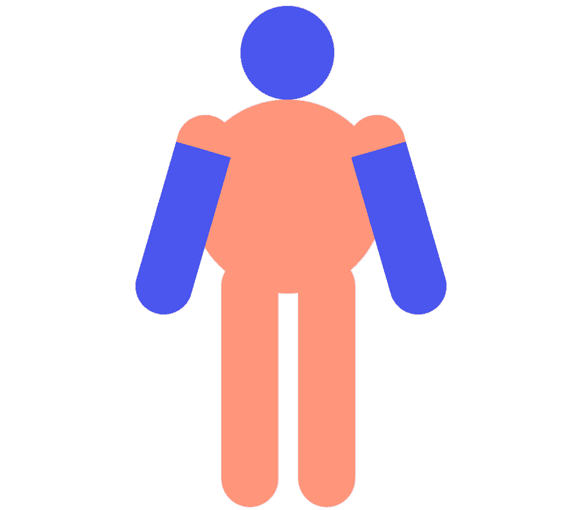
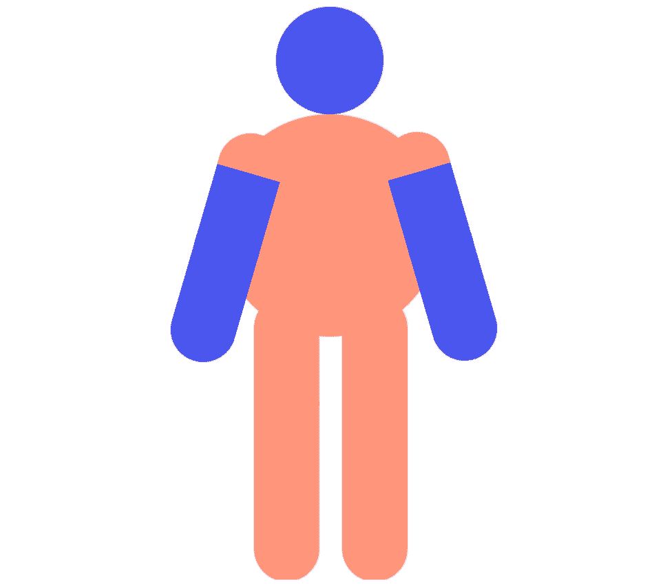
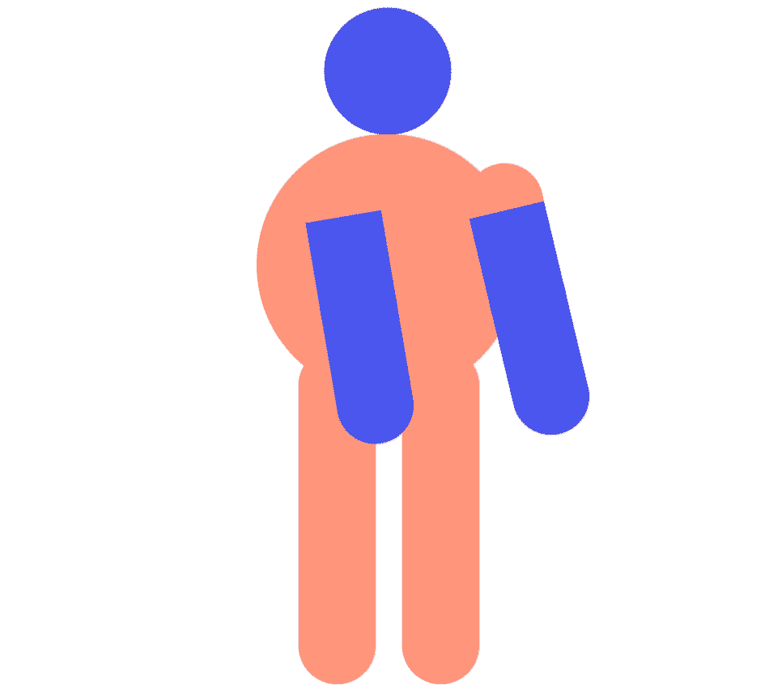

Something went wrong and I don't know what it is. Maybe you could just... sing along?
Semi-Conductor is an experiment that lets you conduct your own orchestra through your browser. You can move your arms to change the tempo, volume, and instrumentation of a piece of music.
It uses Tensorflow.js, a machine learning library that works in the browser, to map out your movements through your webcam. An algorithm plays along to the score as you conduct, using hundreds of tiny audio files from live recorded instruments.
Music: Vivaldi's Winter from the Mutopia Project edition (CC BY-SA 3.0); Can-Can (Offenbach) and The Star-Spangled Banner (John Stafford Smith) arranged for strings for this classroom edition.
Find more information about PoseNet on the TensorFlow blog.
Built by Rupert Parry, Melissa Lu, Haylie Craig and Samantha Cordingley from Google Creative Lab, Sydney. This copy was rebuilt from their open-source code for classroom use.
Instrument samples: tonejs-instruments by Nicholaus Brosowsky (CC BY 3.0), from Freesound and public-domain sources.
Bravo!



Fit your body in frame, Maestro. This is a one person experiment.